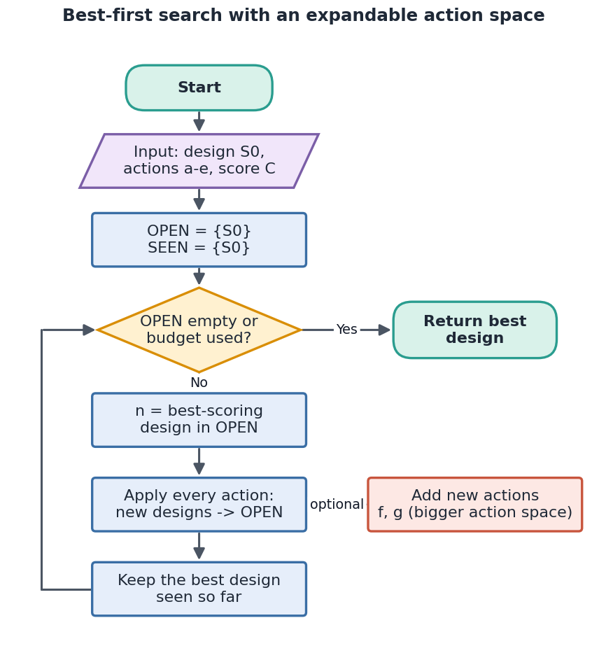
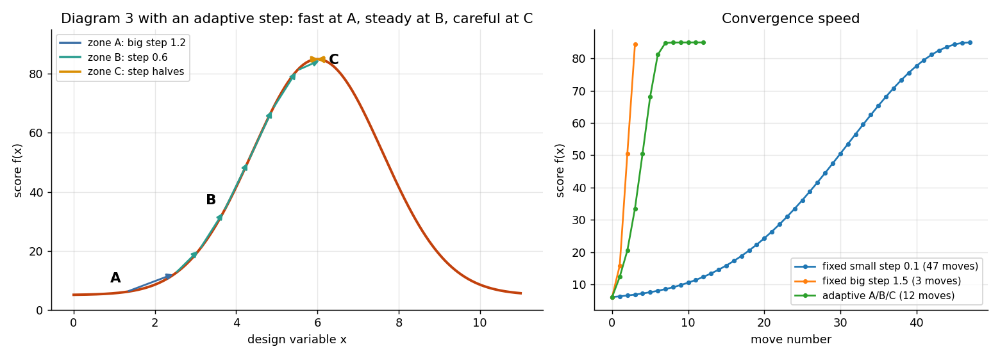
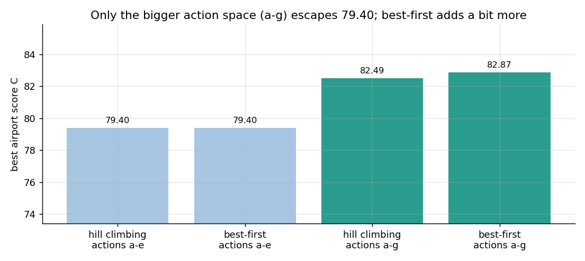
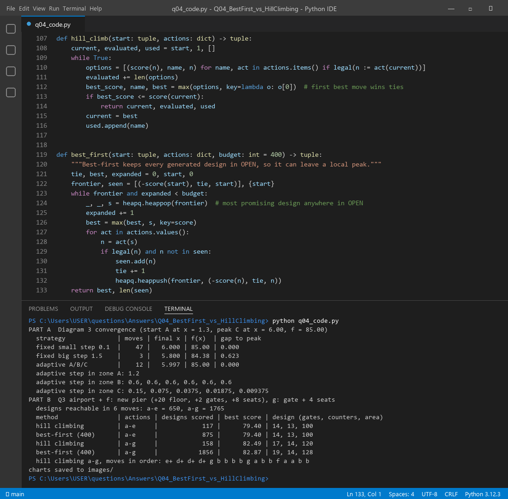

| Hill climbing | Best-first search | |
|---|---|---|
| Memory | Only the current design | An OPEN list of every design generated |
| Next node | Best neighbour of the current one | Best design anywhere in OPEN |
| Backtracking | None, so it gets stuck on a local maximum | Yes, it can jump back to an older, promising node |
| Cost | Cheap | More memory and more designs scored |
In short, hill climbing is best-first search with a memory of size one.
Hill climbing throws away every neighbour it does not choose. Best-first keeps them all in OPEN. When the current branch stops improving, it simply pops the next most promising design, even one from several steps ago. So the explored space grows in many directions at once. In our run, best-first scored 875 designs with actions a–e, while hill climbing scored only 117.

function BestFirst(S0, actions, budget):
OPEN ← {S0}; SEEN ← {S0}; best ← S0
while OPEN not empty and expansions < budget:
n ← design in OPEN with the highest Score
best ← better of (best, n)
for each action in actions: # the action space can be expanded here
child ← apply(action, n)
if child is legal and child not in SEEN: add to OPEN and SEEN
return best
Every new action creates new children, so a bigger action space automatically makes the reachable search space bigger. In the airport, designs reachable in 6 moves rise from 650 (actions a–e) to 1765 (actions a–g). That is the idea of "expand search space + expand action space together": a new action is a new edge, and a new edge leads to new states.
Yes, we can control it, and it can be different at A, B and C. The tool is the step size (in simulated annealing the same job is done by the temperature).
| Zone | Where | Rule used | Why |
|---|---|---|---|
| A | Foot, flat ground | Big step (1.2) | The slope is tiny, so small steps would crawl. Be bold. |
| B | Steep slope | Medium step (0.6) | Follow the gradient steadily. Fast and safe. |
| C | Near the peak | Halve the step after each overshoot | A big step would jump over the peak. Fine-tune. |
Real results from the code (start at A, peak value 85.00):
| Strategy | Moves | Final x | Score | Gap to peak |
|---|---|---|---|---|
| Fixed small step 0.1 | 47 | 6.000 | 85.00 | 0.000 |
| Fixed big step 1.5 | 3 | 5.800 | 84.38 | 0.623 |
| Adaptive A / B / C | 12 | 5.997 | 85.00 | 0.000 |
The small step is accurate but slow. The big step is fast but misses the peak. The adaptive step gets both: it reached the peak in 12 moves, about 4 times faster than the small step.

| Op | Definition | Why it expands the search space |
|---|---|---|
| f | Add a new pier: +20 floor area, +2 gates, +8 seats in one move. | A macro-move. It changes the building footprint, which a–e can never do (they only remove space). |
| g | Gate + seats together: +1 gate and +4 waiting units in one move. | A combined action. It climbs the ridge where gates and seats must grow together. |
| Method | Actions | Designs scored | Best score | Best design (gates, counters, area) |
|---|---|---|---|---|
| Hill climbing | a–e | 117 | 79.40 | 14, 13, 100 |
| Best-first (400) | a–e | 875 | 79.40 | 14, 13, 100 |
| Hill climbing | a–g | 158 | 82.49 | 17, 14, 120 |
| Best-first (400) | a–g | 1856 | 82.87 | 19, 14, 128 |


Files in this folder: q04_code.py (source), q04_code.ipynb (Colab/Jupyter version, already run),
q04_output.txt (console output), images/ (all figures).